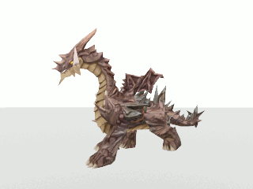

Animation, by definition, is the process of creating continuous motion and shape change illusion by means of the rapid display of sequence of static images that minimalyl differ from each other.
To demonstrate, below here is a video of an animation. At any point during the animation, you can pause it and what you see would be a static image. Play it again and it becomes an animation, through the power of continuous motions of images.
Animation can either be rendered in 2-D space, 2.5-D space, or 3-D space. With the simpliest being 2-D while 3-D animation is the most complicated.
There are 5 main types of animations: (All animation videos taken from wikipedia)
Animation is one of the most important in multimedia. Similar to images and audio, animation helped to expand the content and enhance the user's experience with the content. However, animation deepens visual understanding much more than images. By using animation, static images such as diagrams can more freely and express ideas better. Animation can also limit unnecessary verbiage. Because voiceover narration takes longer without visual or only with static visuals as they need to explain concepts that are difficult to communicate visually. Combining voiceover and animation allow you to present visual information a lot better by allowing you to be selective of what you show in each frames, in a way that is also makes animation better than live action video. Like every other aspects of multimedia, animation while being a great tool to convey information, using them incorrectly can have the opposite intended, so it's important to use animation carefully when creating multimedia content.